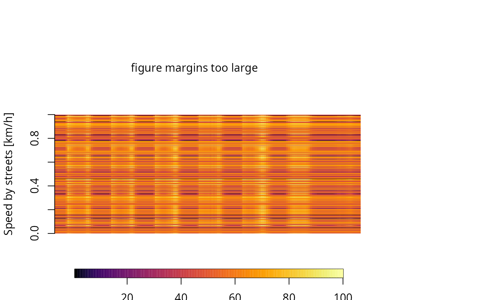

Calculate speeds of traffic network
netspeed.Rdnetspeed Creates a dataframe of speeds fir diferent hours
and each link based on morning rush traffic data
netspeed(q = 1, ps, ffs, cap, lkm, alpha = 0.15, beta = 4, net, scheme = FALSE, distance = "km", time = "h", isList)
Arguments
| q | Data-frame of traffic flow to each hour (veh/h) |
||||||||||||||
|---|---|---|---|---|---|---|---|---|---|---|---|---|---|---|---|
| ps | Peak speed (km/h) |
||||||||||||||
| ffs | Free flow speed (km/h) |
||||||||||||||
| cap | Capacity of link (veh/h) |
||||||||||||||
| lkm | Distance of link (km) |
||||||||||||||
| alpha | Parameter of BPR curves |
||||||||||||||
| beta | Parameter of BPR curves |
||||||||||||||
| net | SpatialLinesDataFrame or Spatial Feature of "LINESTRING" |
||||||||||||||
| scheme | Logical to create a Speed data-frame with 24 hours and a default profile. It needs ffs and ps:
|
||||||||||||||
| distance | Deprecated. Character specifying the units for distance. Default is "km" |
||||||||||||||
| time | Deprecated. Character specifying the units for time Default is "h". |
||||||||||||||
| isList | Deprecated |
Value
dataframe speeds with units or sf.
Examples
{ data(net) data(pc_profile) pc_week <- temp_fact(net$ldv+net$hdv, pc_profile) df <- netspeed(pc_week, net$ps, net$ffs, net$capacity, net$lkm, alpha = 1) class(df) plot(df) #plot of the average speed at each hour, +- sd df <- netspeed(ps = net$ps, ffs = net$ffs, scheme = TRUE) class(df) plot(df) #plot of the average speed at each hour, +- sd dfsf <- netspeed(ps = net$ps, ffs = net$ffs, scheme = TRUE, net = net) class(dfsf) head(dfsf) plot(dfsf) #plot of the average speed at each hour, +- sd }#> Warning: plotting the first 9 out of 24 attributes; use max.plot = 24 to plot all